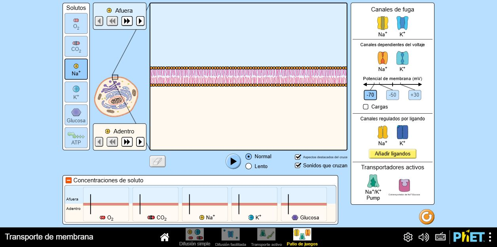
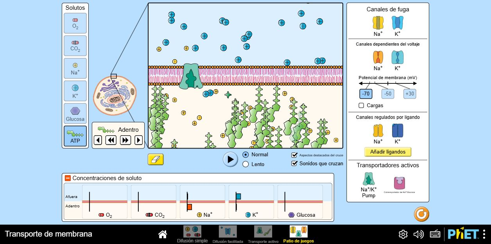
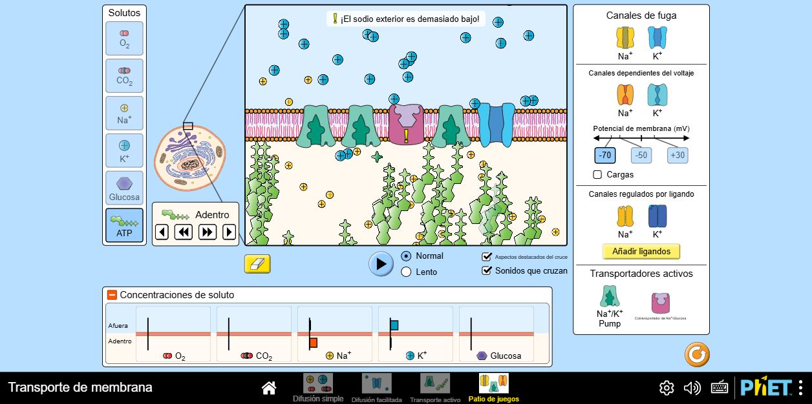
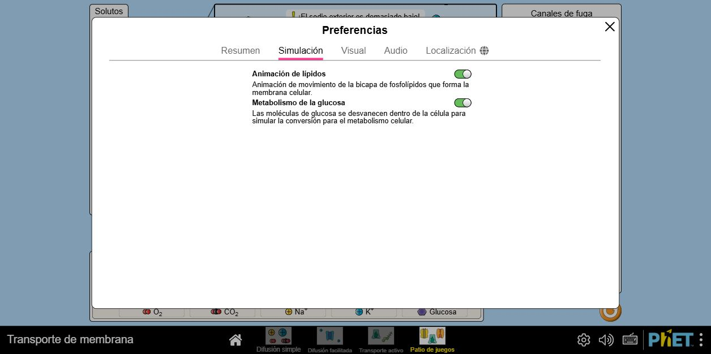
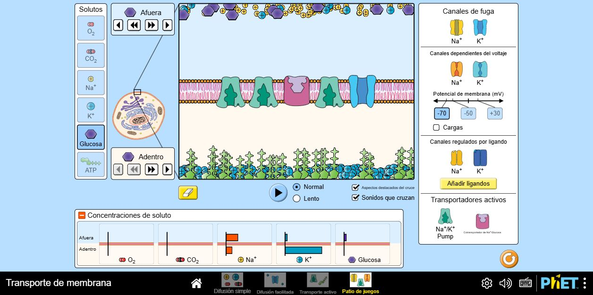
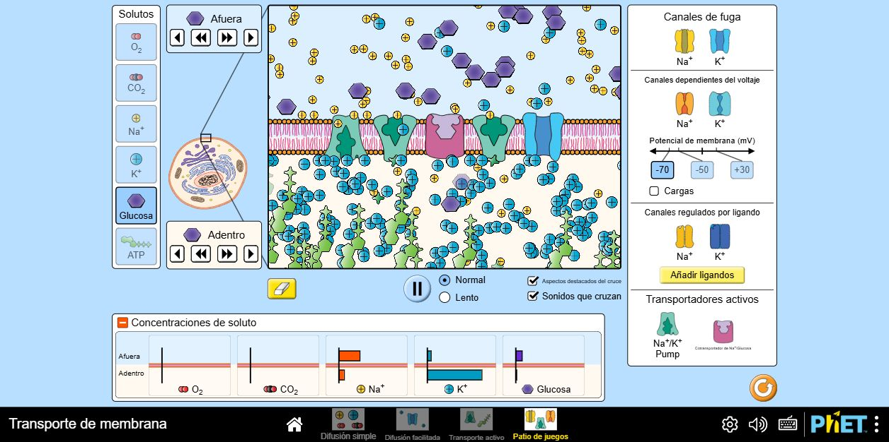
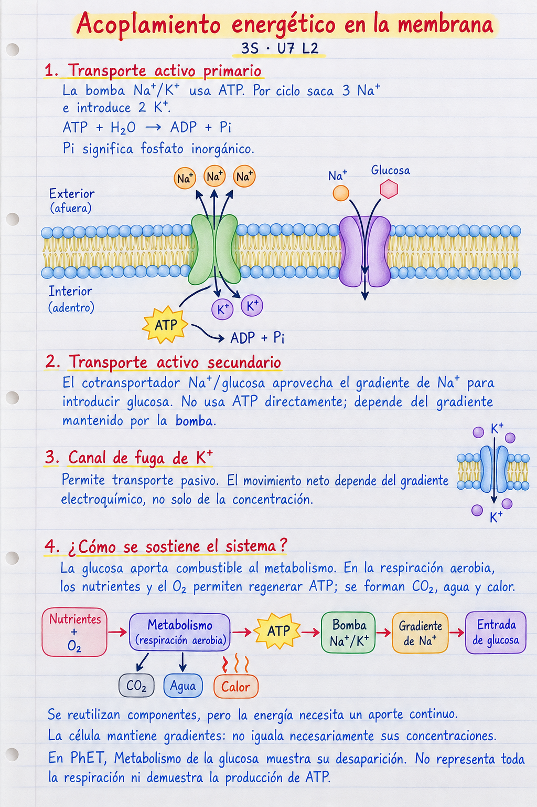
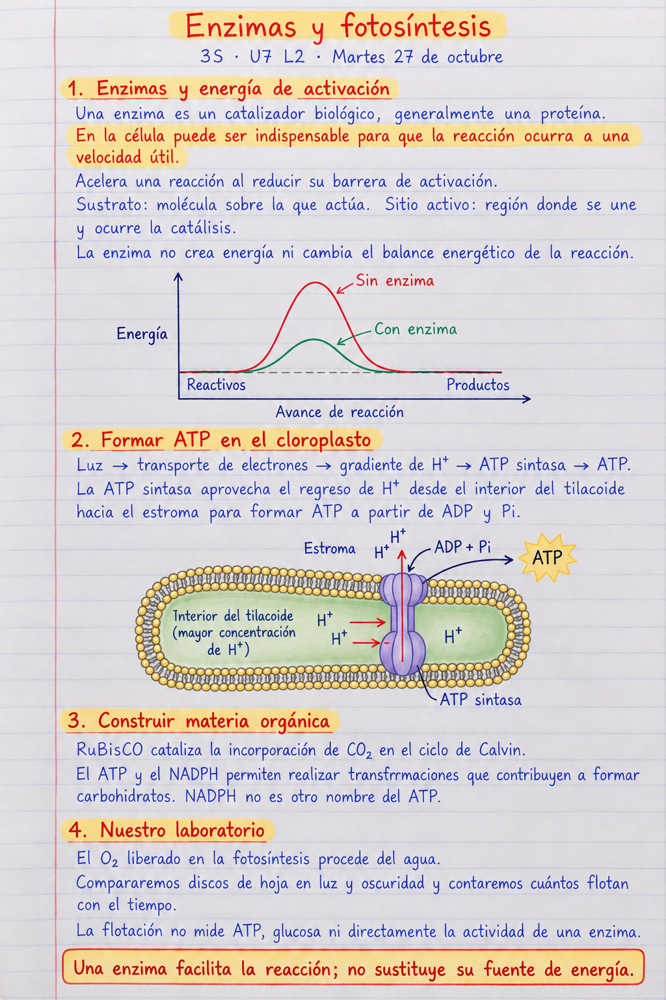
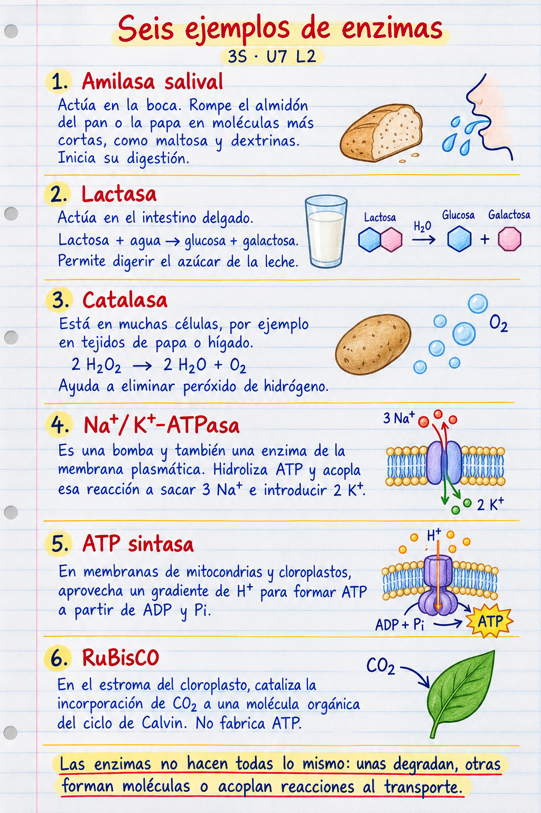

3S · Unidad 7 · Lección 2 · Guía comprobada el 27 de octubre de 2026
Abrir PhET Transporte de membrana
Esta es una configuración didáctica probada, no una reproducción de las concentraciones reales de una célula ni una garantía de equilibrio.
| Soluto | Afuera | Adentro |
|---|---|---|
| Na⁺ | 6 clics | 3 clics |
| K⁺ | 1 clic | 20 clics |
| ATP | No añadir | 3 clics |
| Glucosa | 3 clics | No añadir |
Son clics del modelo, no valores en mM. El gradiente fuerte de K⁺ ayuda a observar salida neta en este montaje; con concentraciones diferentes el resultado puede cambiar.
Si el cotransportador avisa «¡El sodio exterior es demasiado bajo!», comprueba que haya más Na⁺ fuera que dentro. La bomba necesita Na⁺ dentro, K⁺ fuera y ATP dentro; no coloques todo el sodio fuera y todo el potasio dentro dejando sin sustratos a la bomba. La entrada de glucosa necesita además glucosa exterior.
Si dejas la simulación mucho tiempo, se consumen o redistribuyen sustancias. Esta receta permite observar el mecanismo; no garantiza un estado estacionario indefinido. Para mantener una demostración larga, revisa el ATP y los sustratos o vuelve al punto inicial. El modelo no repone ATP a partir de glucosa mediante una respiración completa.






ATP → bomba Na⁺/K⁺ → gradiente de Na⁺ → cotransporte de Na⁺ y glucosa. La bomba usa ATP directamente; el cotransportador usa la energía del gradiente. El canal de fuga es pasivo y su dirección neta depende del gradiente electroquímico.
La regeneración celular de ATP se explica aparte: nutrientes + O₂, en respiración aerobia, permiten obtener energía para formar ATP; también se generan CO₂, agua y calor. La entrada de glucosa puede aportar combustible, pero no es por sí sola toda esa ruta. No es un circuito que cree energía ni un modelo de una célula intestinal completa.
Un estado mantenido con flujos no equivale a equilibrio: pueden mantenerse concentraciones distintas gastando energía. El ATP/ADP y otros componentes se reutilizan; la energía requiere aporte y se disipa parcialmente.
Lo que vimos ayer: según el docente, el lunes 26 se exploró PhET para explicar estas conexiones, pero la explicación no quedó resuelta. Esta configuración y sus capturas se comprobaron después, el martes 27; no se atribuyen al montaje de ayer. Tampoco se afirma que ya se hubiera impartido todo el contenido de enzimas o fotosíntesis.
Usar el montaje ya preparado o la captura final; no gastar toda la clase configurándolo. Pedir que los cuatro estudiantes localicen bomba, cotransportador y canal de fuga. Preguntar dónde se utiliza ATP directamente y qué impulsa la entrada de glucosa.
Respuesta esperada: la bomba hidroliza ATP; el cotransportador aprovecha el gradiente de Na+. La glucosa desaparece al activar su metabolismo en PhET, pero eso no equivale a observar ATP nuevo. Las concentraciones pueden seguir siendo diferentes.
Notas de hoy: enzimas y fotosíntesis
Definir enzima: catalizador biológico, generalmente una proteína, que proporciona una ruta de reacción con menor barrera de activación. Sustrato es la molécula sobre la que actúa; sitio activo es la región de unión y catálisis. Dibujar dos curvas con los mismos niveles iniciales y finales, pero distinta altura de barrera.
Aclaración clave: acelerar no significa ser prescindible. Algunas reacciones ocurren sin la enzima, pero demasiado despacio para las necesidades de la célula; por eso muchas enzimas son funcionalmente indispensables. No afirmar que sin enzimas toda reacción es imposible. La enzima no crea energía, no cambia el balance energético de la reacción y puede participar en múltiples ciclos catalíticos.
Ejemplo: el peróxido de hidrógeno puede descomponerse sin catalasa; la catalasa acelera su transformación en agua y oxígeno. Preguntar si la enzima crea ese oxígeno o facilita la reacción: facilita la reacción. No convertir esta explicación en un experimento improvisado ni atribuirlo al laboratorio de mañana.
Amilasa salival: en la boca, comienza a hidrolizar el almidón del pan o la papa y produce fragmentos más cortos, como maltosa y dextrinas. Sirve para iniciar su digestión. No decir que su producto directo sea únicamente glucosa.
Lactasa: en el intestino delgado, cataliza lactosa + agua → glucosa + galactosa. Permite digerir ese azúcar. Comparar con amilasa: cambiar de sustrato exige una enzima con las características catalíticas adecuadas; no todas las enzimas actúan sobre todo.
Catalasa: presente en muchas células, por ejemplo tejidos de papa o hígado. Cataliza 2 H₂O₂ → 2 H₂O + O₂ y ayuda a eliminar peróxido de hidrógeno. La ecuación conserva hidrógenos y oxígenos.
Na+/K+-ATPasa: proteína de la membrana plasmática que es bomba y enzima. La hidrólisis de ATP se acopla a sacar tres Na+ e introducir dos K+ por ciclo típico. No es simplemente un agujero que deja pasar iones y no sustituye la necesidad de ATP.
ATP sintasa: en membranas mitocondriales y de cloroplastos, aprovecha un gradiente de H+ para formar ATP a partir de ADP y Pi. Es una máquina catalítica acoplada a un flujo, no una enzima que fabrique energía de la nada.
RuBisCO: en el estroma del cloroplasto, cataliza la incorporación de CO₂ a una molécula orgánica del ciclo de Calvin. No fabrica ATP. Pedir a cada estudiante explicar un ejemplo con tres datos: sobre qué actúa, qué cambia y para qué sirve. No exigir copiar las tres hojas completas hoy.
Recorrer la cadena luz → transporte de electrones → gradiente de H+ → ATP sintasa → ATP. En el cloroplasto, los protones retornan desde el interior del tilacoide al estroma. Separar este dibujo de la mitocondria, donde la energía procede de oxidar nutrientes y el retorno es hacia la matriz.
Pregunta: si ATP sintasa es una enzima, ¿basta con tenerla para producir ATP? Respuesta: no; en esta explicación necesita ADP, Pi y un mecanismo impulsado por el gradiente. Facilitar la catálisis y proporcionar energía no son lo mismo.
Explicar que el ATP y el NADPH participan en transformaciones del ciclo de Calvin que contribuyen a construir carbohidratos a partir de CO₂. NADPH no es otro nombre del ATP. RuBisCO incorpora el carbono; otras enzimas realizan los demás pasos. El O₂ de las reacciones luminosas procede del agua, no del ATP ni directamente del CO₂.
Ampliación solo si ayuda a la comprensión: 3-PGA + ATP → 1,3-BPG + ADP, catalizada por fosfoglicerato quinasa. Nombrar 3-PGA como 3-fosfoglicerato y 1,3-BPG como 1,3-bisfosfoglicerato; se transfiere un fosfato desde ATP. No exigir memorizar intermediarios ni atribuir este paso a RuBisCO o nitrogenasa. Si falta tiempo, conservar la explicación cualitativa de transferencia de fosfato.
Cada estudiante completa oralmente una comparación: Na+/K+-ATPasa utiliza ATP para transporte; ATP sintasa forma ATP impulsada por un gradiente; RuBisCO fija carbono. Preguntar qué podremos observar mañana: flotación y tiempo, no esas moléculas directamente.
OpenStax: reacciones luminosas
Martes 27/10, ultimos ocho minutos: anticipar el laboratorio del miercoles, pedir vaso transparente y mostrar pregunta, control, registro y limites. El docente prepara bicarbonato y hojas de respaldo ensayadas.
Para los cuatro estudiantes, trabajar mañana en dos parejas, con un vaso de luz y otro de oscuridad por pareja. Anticipar diez discos por vaso, infiltración con jeringa sin aguja y conteos a intervalos iguales, según el protocolo ya incorporado en el miércoles. El docente aporta solución y hojas de respaldo probadas; no pedir a los estudiantes preparar mezclas por su cuenta.
Precisar el producto individual: predicción, datos y conclusión con una limitación. La flotación no mide ATP, glucosa ni actividad de RuBisCO. Conservar la explicación C2 separada de la evidencia C1.
Comprobación final: cada estudiante distingue una enzima de una fuente de energía y señala una cosa que el simulador representa y otra que debe explicarse con un modelo.
Material de consulta y síntesis. No se exige copiar las tres páginas completas en una sola clase.



Capturas propias de la interfaz de PhET Interactive Simulations, University of Colorado Boulder. No se modifica ni se redistribuye el simulador; se enlaza al original.
HHMI BioInteractive: actividad de transporte de membrana, página 6 · OpenStax: transporte activo · OpenStax: enzimas